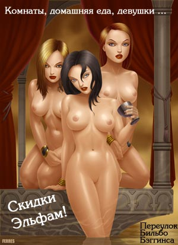
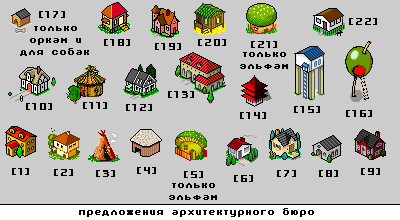

Реклама постоялого двора
Список жителей города
Высокоуважаемые боги городаЕго величество Марль Карксс — Наш город, Тупичок золотоискателей
okk ham i (без титулов) — Наш город, постоялый двор на переулке Бильбо Бэггинса
Высокоуважаемый Тродор — Наш город, Башня Тродора у поляны магов
Высокоуважаемый дракон Skilldur — везде и нигде одновременно
Уважаемые жители города
Уважаемый эльф RastaMan — Наш город, поляна Расты около площади магов
Уважаемая человек Марьяна — Наш город, Дубовая аллея
Уважаемый эльф Хемуль Пестелло — Ур, Огненная аллея
Уважаемая эльф Мэриль — Наш город, постоялый двор на переулке Бильбо Бэггинса
Уважаемый человек Hruom — Наш город, Тенистый переулок. Рыбацкий посёлок, улица Старых рыбаков
Уважаемая человек Lila — Наш город, Вторая заречная
Уважаемая полуэльф Аэрин — Наш город, постоялый двор на переулке Бильбо Бэггинса
Уважаемый гоблин Треч — Наш город, Липовая аллея
Уважаемая человек Saje4ka — Наш город, Марлева пещера в скалах
Местные бомжи
Бомжистый гоблин Kindzomanjalu
Бомжистый мнемоник Тымненебрат
Бомжистый мнемоник Калистратушка
Легенды о Марле Каркссе
Был такой бог. Повелитель торговли, воров и програмного кода для форума.Предания говорят, что легенды Марля Карксса писал некто Хрум ходивший у того в послушниках.
Коллекция Хемуля
Уникальная коллекция собранная Хемулем Пестелло
Барсик и реклама гномских наеников
Школа воинов бога okk ham i и дипломные работы
Содержание файла с удивительным названием PARTY.TXT
Тут же рядом с вами стоят: Мэриль Hruom Lila Neiromancer Цербер Жирный кролик в панике мечется у ваших ног. Старшина Двалин жуёт семечки и плюёт шелуху на землю. Гномы воины: Тори и Хори молчаливо осматривают окрестности. Эльф Зерасетдин приветствует вас широкой доброй улыбкой. Кролик копошится под ногами и косит на вас бусинками глаз. Откуда он взялся? Кролик копошится под ногами и косит на вас бусинками глаз. Откуда он взялся? Кролик копошится под ногами и косит на вас бусинками глаз. Откуда он взялся? Кувшин молока убегает, держите его! Кувшин молока убегает, держите его! Кувшин молока убегает, держите его! Букет цветов валяется под ногами. Косяк валяется под ногами. Косяк валяется под ногами. Косяк валяется под ногами. Пиво валяется под ногами. Пиво валяется под ногами. Пиво валяется под ногами. Эль валяется под ногами. Эль валяется под ногами. Эль валяется под ногами. Арбуз валяется под ногами. Арбуз валяется под ногами. Арбуз валяется под ногами. Рыба, сушеная, лежит, и только зоркий пивной глаз заметит её в тени. Рыба, сушеная, лежит, и только зоркий пивной глаз заметит её в тени. Рыба, сушеная, лежит, и только зоркий пивной глаз заметит её в тени. Блюдо из крольчатины ровным слоем размазано по земле... Блюдо из крольчатины ровным слоем размазано по земле... Блюдо из крольчатины ровным слоем размазано по земле... Блюдо из крольчатины ровным слоем размазано по земле... Блюдо из крольчатины ровным слоем размазано по земле... Мусор лежит на земле... прячется от дворников. Мусор лежит на земле... прячется от дворников. Мусор лежит на земле... прячется от дворников. Мусор лежит на земле... прячется от дворников. Мусор лежит на земле... прячется от дворников. Окровавленная кроличья тушка втоптана в грязь. Сушеные специи рассыпаны по полу. Можно их сгрести в кучку. Сушеные специи рассыпаны по полу. Можно их сгрести в кучку. Окорок валяется под ногами. Окорок валяется под ногами. Окорок валяется под ногами. Вино валяется под ногами. Вино валяется под ногами. Вино валяется под ногами. Вино валяется под ногами. Блюдо с фруктами манит вас сочными и спелыми плодами. Блюдо с фруктами манит вас сочными и спелыми плодами. Блюдо с фруктами манит вас сочными и спелыми плодами. Блюдо с фруктами манит вас сочными и спелыми плодами. Блюдо с фруктами манит вас сочными и спелыми плодами.* примечание составителя:
достоверно известно, что на измененном форуме phpBB были введены предметы, лежавшие под ногами в некоторых ветках форума и которые можно было положить к себе в инвентарь.
Крепость «Ур» и город у крепости
Легенда города Ур
Выдержка из секретного файла «Биль о боевке.doc», распостранявшегося только между богами
Расчет Damage
Damage = WeaponPower * (Str/20) * f(Level), гдеОтсюда, оружие будет определятся классом, параметром WeaponPower и необязательными бонусами, влияющими напрямую на OB/DB/PB.
- WeaponPower – мощность оружия, сколько HP оно может снимать,
- f(Level) – (TOBE) логарифмическая(?) функция от уровня персонажа, позволяющая постепенно наращивать мощь ударов.
Пример. «Детский совок» – класс кинжал, WP = 5, +2 DB, -4 PB.
Скрины GPS-карты богов к началу и концу похода на пиратов
{kind=link}
{kind=link}
Красный - жители города
Синий - пираты
Коричневые - дружественные NPC
Зеленые - боги
Выдержка из переписки бога okk ham i во время войны спиратами
От: Хемуль Пестелло
Кому: okk ham i
Добавлено: Пт Ноя 08, 2002 13:35
Тема: действия
ну пофиг, если все действуют поодиночке, то я иду в разведку. Если Зерасетдин
согласится, неплохо бы пойти с ним вдвоем. Маршрут - пройти по дороге мимо болот,
потом свернуть с дороги направо - и по чаще до старой крепости,
там дальше думать будем.
------------------------------------------------------------------------
------------------------------------------------------------------------
От: Kindzomanjalu
Кому: okk ham i
Добавлено: Вт Ноя 12, 2002 12:16
Тема: Molitva
О великий бог воины окк хам и!
Не откажись от прошения простого гоблина!
Приношу Тебе в дар этого пушистого кролика! Он вкусный, его можно съиесть,
но можешь и испытать на нём боевой топор, поэтому, я его оставил живим.
Прошу Тебя об одном: Помоги нашему военночальнику-воеводе, видимо же,
что недобрая магия омрачняет рассудок, и не дает принять хорошего, твердого плана!
Придай сили, и помоги в решениях.
Твой подданий гоблин придумал план, и даже изложил его воеводе. Помоги ему!
Пусть это будет не мой план, не дай Бог нам идти в битву без хорошего (Пакистанского) плана!
Твой подданий,
Киндзоманялу
П. С. Кролика попробую не жечь, а передать Тебе обычным, земным способом.
------------------------------------------------------------------------
------------------------------------------------------------------------
От: Hruom
Кому: okk ham i
Добавлено: Вт Ноя 12, 2002 14:03
Тема: Re: Поход на пиратов: окончание первой недели.
Значит так,
ближе я пока не подхожу..
Веду себя тихо, осмотрительно,
восстанавливаю силы..
Часа через 2-3 его внимание должно ослабнуть,
это синдром всех охранников..
Тогда - я напишу, что дальше..
а что случилось с Хемулем??
Надеюсь, он жив..
------------------------------------------------------------------------
------------------------------------------------------------------------
От: Марьяна
Кому: okk ham i
Добавлено: Вт Ноя 12, 2002 22:25
Тема: разведкка
я побегу по краю леса на разведку! в сторону ручья! хрен с ним, с пиратом.
может еще кого встречу. я быстрая, да?
_________________
чичичи
------------------------------------------------------------------------
------------------------------------------------------------------------
От: Kindzomanjalu
Кому: okk ham i
Добавлено: Ср Ноя 13, 2002 14:25
Тема: dejstvija
Гоблин Киндзоманялу, хоть и боится, но ступает под своди дремучего леса.
Пробирается осторожно, поминутно приглядиваясь и присматриваясь.
Стараясь не выходить на опушку леса, пробирается к змейному ручю.
Старается так же не слишком опережать товарищей (кто ж их выручать будет? )
От: Kindzomanjalu
Кому: okk ham i
Добавлено: Ср Ноя 13, 2002 17:29
Тема: deistvije
Так как я чуточку опередил остальных с выходом, то чтобы не терять время даром,
взобрался на високую сосну, растушию на пригорке, осмотреться.
Может увижу, что с друзьями, а может - летающих пиратов.
Кто знает?
------------------------------------------------------------------------
------------------------------------------------------------------------
От: Хемуль Пестелло
Кому: okk ham i
Добавлено: Ср Ноя 13, 2002 18:01
Тема: действия
ок, убежал, так убежал.
продолжаю, не таясь, идти по дороге. настороже. если кого-то вижу (в т.ч. пиратов) -
пытаюсь заговорить: машу чем-то белым, кричу "Ahoy there!", все в таком духе.
повторяю, иду настороже. если что, готов и лук использовать по назначению.
кстати, где я? до холма не дошел?
=======================================================================
=======================================================================
Date: Tue, 12 Nov 2002 17:25:06 +0200
От: Hruom
Кому: okk ham i
Subject: dejstvija
Значит так,
я иду пошатываясь с бухлом в руках,
его бухаю время от времени
(так - символически, для запаху,
сам - на самом деле, трезвый)..
Иду и пою (не очень громко,
скорей для себя) следующую песню:
"Мой папаша пил как бочка
и погиб он от вина,
я одна осталась дочка,
буду век ему верна.."
Типа настроение хорошее..
И иду не к нему,
а как бы мимо,
причём его "не вижу"..
(Но краем глаза, бдю)
Главы книги посвященной великому походу
написанные приспешником okk ham i, и из которой узнаем, что богу войны и справедливости просто стало скучно и он решил кого-нибудь убить
Легенда о Борге
Камень, скалы и горы.
Скоро солнцу вставать над равниной.
Там будет рассвет, будет день,
Жизнь забурлит своенравной горной стремниной.
Ветер там пением птиц будет наполнен,
А не шипением гадов,
Таких, что имен и не вспомнить.
Дети там будут играть.
...
Легенда о Борге
Декорации к городам
Карта главного города
{kind=link}
Документ о навыках персонажей
Предложения архитектурного бюро и заявка Хемуля Пестелло на проживание
От: Хемуль Пестелло Кому: okk ham i Добавлено: Пт Ноя 01, 2002 12:48 Тема: что нам стоит дом построить О великий архитектор okk ham i! Я, наконец, решил, где я хочу построить свой дом. И кроме того, я знаю, чем буду заниматься. И эти две вещи связаны. Своим трактатом я, кажется, убедил тебя, что разбираюсь в луках и стрелах. Когда я был в Тренте, мне приходилось подрабатывать подмастерьем у тамошнего знаменитого хромого стрельника. А теперь я решил, что у меня достаточно мастерства, чтобы заниматься стрельничьим дело самому. Я хочу построить себе дом в Уре, к югу от Южной улицы. А к дому пристоить небольшую лавку с названием "Забитая стрела". Описание интерьера я пришлю тебе чуть позже, хорошо? Равно как и свою коллекцию всякого хемуля, которую я хочу выставить у себя в лавке просто так. Вопрос: как быть с исходным материалом для стрел? От: Хемуль Пестелло Кому: okk ham i Добавлено: Пт Ноя 01, 2002 17:56 Тема: что нам стоит дом перепостроить Даже великие боги ошибаются, о великий бог okk ham i! Если ты повнимательнее присмотришься к моему строительному проекту, то увидишь, что я хотел построить дом в Уре, а не в Первом городе. К югу от Южной улицы. Ты ведь бог, тебе дом перенести ничего не стоит. А?